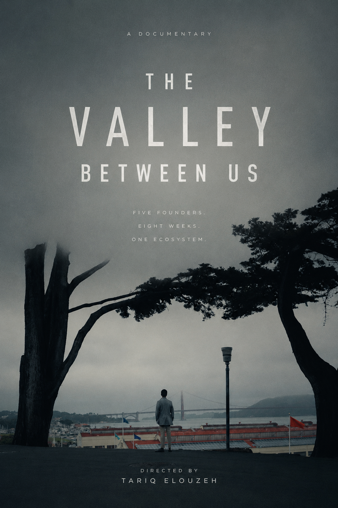
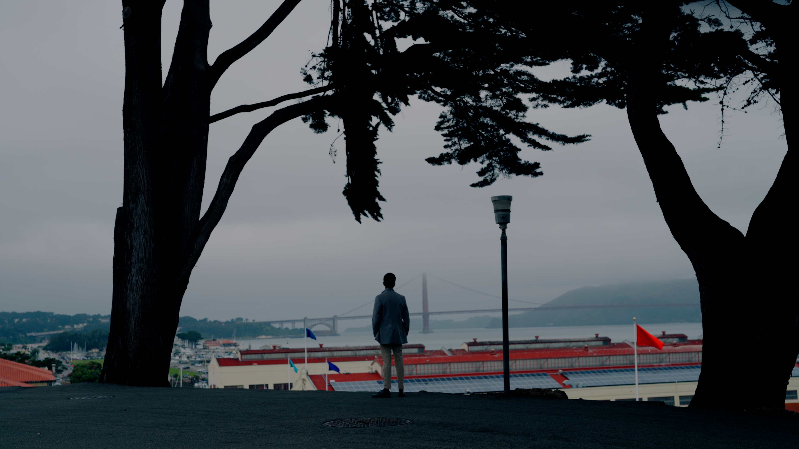
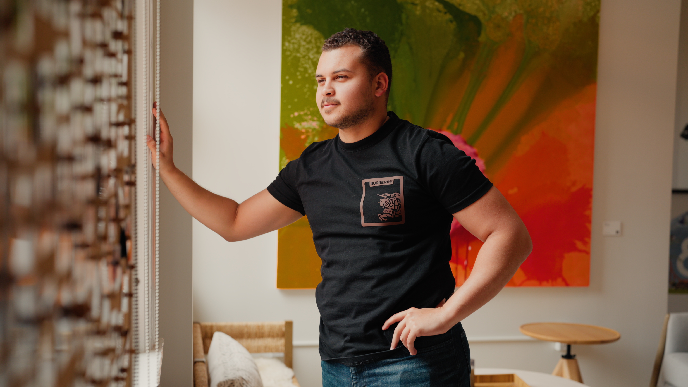
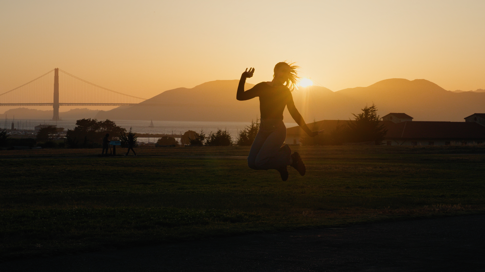
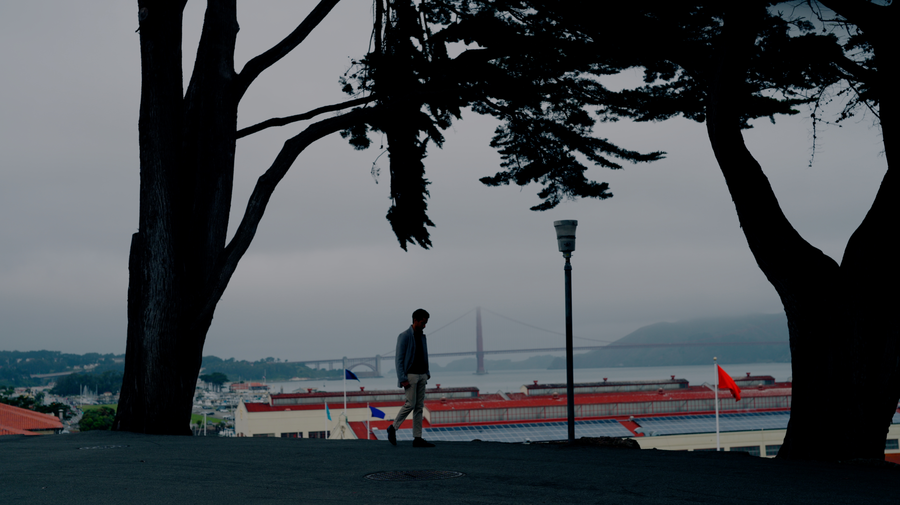
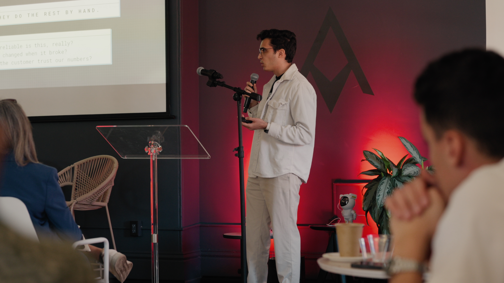
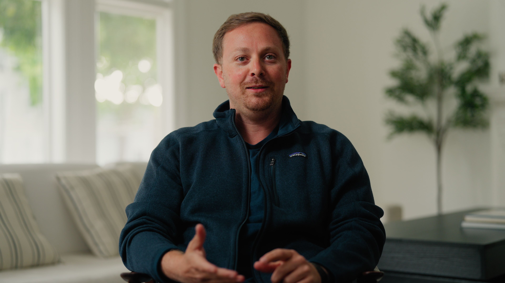
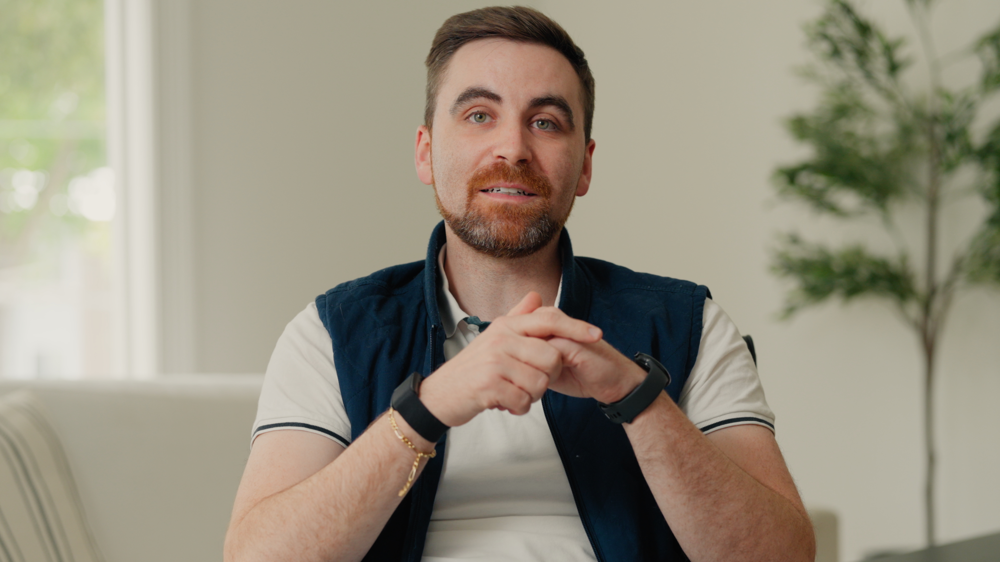

A Documentary
The Valley Between Us
Five Founders. Eight Weeks. One Ecosystem.
Scroll
A Documentary
Five Founders. Eight Weeks. One Ecosystem.
Five founding teams from across the Middle East and North Africa flew to San Francisco for an eight-week residency at Kernel Camp, a program run by Propeller, a venture fund embedded in the region.
None of them left the way they arrived. The Valley Between Us follows their transformation through the deep end of Silicon Valley. The pivots, the sacrifices, the family they built inside one house. It is a film about ambition crossing borders, and what happens when talent from an underrepresented region is placed on the world's most competitive stage.










Tariq Elouzeh is a filmmaker documenting the people and stories at the edges of ambition. The Valley Between Us is his portrait of a generation of founders from the MENA region stepping onto the global stage, told from inside their eight-week crossing.
tariqlabs.com →I didn't set out to make a film. I set out to understand something I'd been circling for years as an engineer, and as someone who spends his time trying to explain hard things to other people. Why does it seem to matter so much where you build?
You can read every essay on product-market fit. You can watch every pitch deck teardown on YouTube. I have. Some of them I've probably made. But none of that fully explains what happens to a founder when you take them out of their home country and drop them into a hacker house in San Francisco with four other teams, all under the same pressure, the same deadline, the same unblinking proximity to investors who've seen a thousand pitches before theirs.
That's the question The Valley Between Us tries to answer, not with argument, but with observation. Five teams, from Morocco, Egypt, Tunisia, and Jordan. Eight weeks. One house. I wanted to watch the distance between what founders think they're building and what they end up building close in real time, not because someone told them to pivot, but because the room itself demanded it.
As a first-time filmmaker, I brought the instincts I trust most. Get close to the people doing the work. Resist the urge to over-explain. Trust that the audience, like my audience of developers back home, is smart enough to sit with nuance. This isn't a film about Silicon Valley as a place. It's about the valley between where these founders started and who they became, and whether that gap can only be closed by being there.